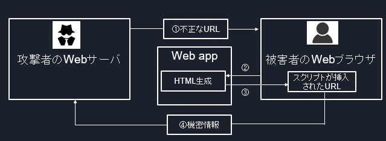
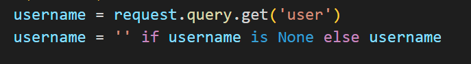

#!解説!#
先程のフォームで何が起こったのか解説します。

実行したソースコードの中を見てみると、反射型XSSが起きてしまう原因はここにあります。

ここでWebアプリケーションからの入力値をスクリプトとして扱っています。
その結果、scriptタグが実行されてしまいます。
最も有効な処理は「<」や「"」などの意味を持った文字(特殊文字)を他の文字に置き換えてしまう方法です。
この方法を
エスケープ処理
と言います。
HTMLでよく使われる特殊文字列には以下のようなものがあります。
| 特殊文字 |
文字符号(エスケープ後) |
| ＜ |
＆lt; |
| ＞ |
＆gt; |
| " |
＆quot; |
| ' |
＆apos; |
| ＆ |
＆amp; |
それではエスケープ処理をするコーディング反射型XSSを防いでいきます。
usernameでrequestをする処理を行った後、
username=html.escape(username)
を追加しましょう。
この一文はhtmlモジュールにあるescapeメソッドを使用したエスケープ処理です。
実際にエディタでセキュアコーディングを行ってみましょう。
ローカル環境に戻って./app/vulunerable1/run.pyを開き、コード修正する